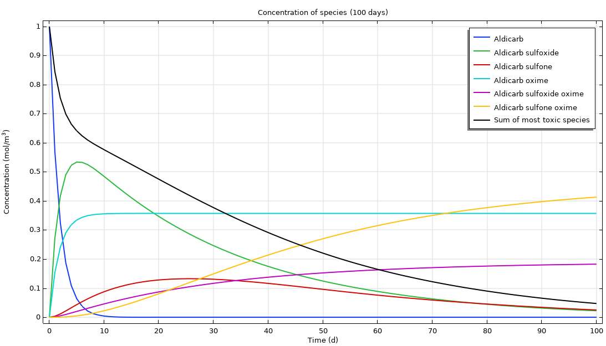
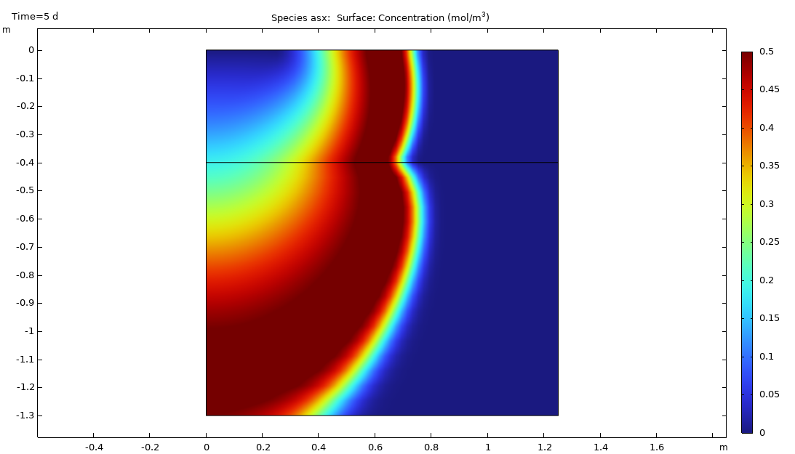
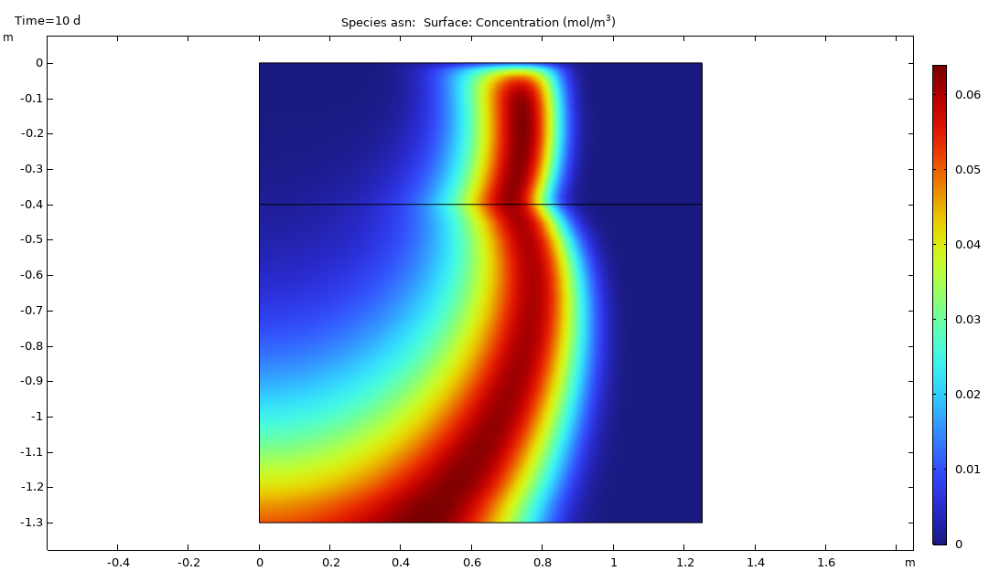

🌱 Pesticide Transport and Reaction in Soil
Pesticide concentration evolution over time.
Pesticides do not just vanish after application. Some break down, others bind to soil, and many quietly begin a downward journey. This project captures that silent descent of water-soluble pesticides. After being applied at the surface, they gradually infiltrate the unsaturated zone and creep toward the water table. Using COMSOL Multiphysics, I built a coupled model that simulates this exact process. It combines variably saturated flow (via Richards’ Equation) with solute transport to explore how chemical reactions, soil properties, and infiltration patterns affect contaminant behavior. The goal? To better understand not just where the pesticide goes, but how fast, how deep, and how long it lingers.
The model is divided into 2 main parts:
🧩 Model Structure
1. Perfectly Mixed System (Water Pond Model)
- Setup: A closed, perfectly mixed water pond contains Aldicarb and its degradation products. “Perfectly mixed” means uniform concentration throughout—no spatial gradients to worry about here.
- Chemistry: Six unimolecular reactions transform Aldicarb into sulfoxide and sulfone (both toxic, LD₅₀ = 0.9 mg/kg and 24 mg/kg respectively), and then further into less toxic oximes and nitriles (LD₅₀ up to 8,000 mg/kg).
- Math: A set of coupled Ordinary Differential Equations (ODEs) tracks each species’ mass balance over time. Solving the degradation kinetics and residence periods shows how Aldicarb transforms into other toxic forms and eventually detoxifies. Toxicity is indicated by LD₅₀ values.
2. Space and Time-Dependent System (Soil Transport Model)
- Key Processes: In the soil, chemicals react and move by convection (flowing water), dispersion (variations in flow paths and diffusion), sorption (sticking to soil), and volatilization (evaporation).
- Geometry: Two layered soil domains beneath a ponded ring (radius = 0.25 m) on nearly impervious rock. Water infiltrates through the ring and seeps down through the soil layers. Infinite‐element domains on the sides let water and solutes “escape to infinity” without artificial boundary effects.
- Mass Transport: Movement of solutes is described by a governing equation accounting for advection, dispersion, sorption, volatilization, and decay. Diffusion is represented by a liquid-gas dispersion tensor.
🧰 Data Handling
- Rate Constants: Define how fast each chemical reaction proceeds (k1-k5).
- Material Properties: Includes fluid flow parameters (Ks, θs, θr) and solute transport properties (ρb, kp, Dm).
- Boundary Conditions: Constant concentration at the pond, no-flow boundaries, and volatilization to the atmosphere.
The model simulates vertical infiltration through two soil layers beneath a surface ring, replicating realistic field conditions in an efficient axisymmetric domain.
Figure 1: Geometry of the infiltration ring and soil column.
📊 Results & Visualisations
Perfectly Mixed System
Aldicarb quickly degrades, but its toxic by-products (sulfoxide and sulfone) can persist for much longer, leading to high contamination levels even after several months. This highlights the importance of considering degradation pathways and the toxicity of intermediate products.
Figure 2: 2D Concentration profiles as reactions occur during a 100 day time period.
This plot shows the overall degradation of aldicarb and the formation and subsequent decay of its by-products over 100 days.
Fluid Flow in Soil
Water moves from the pond into the soil, with higher velocities directly beneath the pond. This flow field is crucial because it dictates the direction of contaminant transport.
Figure 3: Animated 2D view of effective saturation (surface plot), pressure head (contours), and flow velocity (arrows) in a variably saturated soil, over 10 days.
Head contours and streamlines show water infiltrating primarily beneath the ring and spreading out over time. The flow field in the variably saturated soil is the “engine” of contaminant transport and governed by Richards equation. The hydraulic head and Darcy velocity field determine exactly how—and where—the pesticide will go.
Figure 4a: 2D pressure head distribution (in decibars) in the soil column after 10 days of infiltration. The steep vertical gradient beneath the ponded ring indicates strong downward flow, while the horizontal contours near the bottom suggest lateral spreading and transition to a near-hydrostatic condition.
Figure 4b: 3D visualization of pressure head in the soil domain. The pressure field is highest near the infiltration source, driving fluid downward through the upper soil and into the lower layer. This gradient controls the direction and velocity of contaminant transport.
These plots reveal the head gradient driving infiltration. Areas of high hydraulic head correspond to zones of increased water entry, directly linked to solute transport patterns.
Concentration Distribution of Aldicarb and its By-products
Aldicarb Distribution—After 10 Days

Figure 5a: 2D display of aldicarb concentration evolution after 10 days.
Figure 5b: 3D display of aldicarb concentration evolution after 10 days.
Figure 5c: Animated 3D display of aldicarb concentration evolution over 10 days.
Aldicarb tends to remain more localised to the source, and its distribution reaches a steady state relatively quickly (around 10 days), consistent with the degradation observed in the mixed system model.
Aldicarb Sulfoxide Distribution—After 10 Days
Figure 6a: 2D display of aldicarb sulfoxide concentration evolution after 10 days.
Figure 6b: 3D display of aldicarb sulfoxide concentration evolution after 10 days.
Figure 6c: Animated 3D display of aldicarb sulfoxide concentration evolution over 10 days.
Aldicarb sulfoxide, being an equally toxic degradation product that is also mobile, can spread over a considerably larger soil volume and persist for a significantly longer time. This is a critical finding, as it implies a wider and more prolonged environmental impact from the degradation product than from the parent pesticide itself.
Aldicarb Sulfone Distribution—After 10 Days
Figure 7a: 2D display of aldicarb sulfone concentration evolution after 10 days.
Figure 7b: 3D display of aldicarb sulfone concentration evolution after 10 days.
Figure 7c: Animated 3D display of aldicarb sulfone concentration evolution over 10 days.
Aldicarb sulfone, which is also toxic but slightly less mobile than sulfoxide, does not spread as aggressively, but its persistence is notable and must be considered in long-term risk assessments.
These surface plots show the spatial distribution of aldicarb, aldicarb sulfoxide and aldicarb sulfone in the soil over 10 days.
🧠 Simplified Insights
- Complex Interactions: Groundwater contamination involves a complex interplay of physical flow processes (flow, dispersion, sorption, volatilization) and chemical reactions (degradation).
- Degradation Products Matter: The toxicity and mobility of degradation products are as important as the parent contaminant. These products can drive long-term risk.
- Infinite Element Domain: Using "Infinite Element Domain" in COMSOL simulates very large domains without artificial boundary effects. This allows for more accurate results in the region of interest.
This model provides a robust framework for understanding and predicting the environmental fate of pesticides in the subsurface, guiding risk assessment and management strategies.
Key Features & Technologies
Key Features
- Multi-physics simulation (Richards’, Darcy, Stokes)
- Visualizes contaminant transport and risk zones
- Supports scenario analysis for groundwater management
Technologies Used
- COMSOL Multiphysics
- Custom ODE solvers